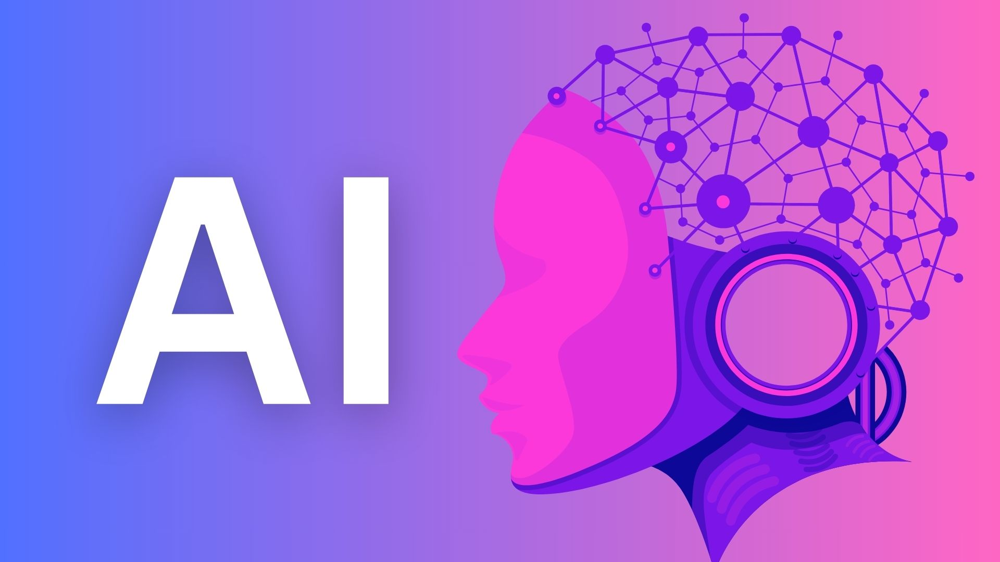

Experience
Junior AI Engineer
Smart AI
July 2025 - Present
AI systems, automation, and product delivery
Junior AI Engineer based in Islamabad, focused on production-grade LLM systems, voice automation, RAG pipelines, and cloud-backed applications that perform under real operating constraints.
 LinkedIn
LinkedIn
 GitHub
GitHub
About
Junior AI Engineer
Smart AI
July 2025 - Present

B.Sc. Computer Science
FAST National University
Dean's List | Gold Medalist
I work across model integration, backend APIs, workflow orchestration, and cloud deployment. The emphasis is on systems that stay fast, stable, and maintainable after launch, not just during demos.
My stack spans Python, FastAPI, LangChain, Azure, React, SQL, and automation tooling. I care about architecture choices that reduce latency, improve reliability, and make iteration easier for teams.
Beyond traditional AI pipelines, I specialise in building end-to-end automation workflows using n8n, Vapi, OpenAI, and the Model Context Protocol (MCP). From AI-powered email assistants to voice-enabled receptionists and multi-channel outreach systems, I design automation that delivers measurable business outcomes — reduced manual work, faster response times, and systems that operate 24/7 without human intervention.
Experience
Capabilities

Experienced
Experienced
Experienced
Experienced
Experienced
Experienced
Experienced
Experienced
Experienced
Experienced
Intermediate
Experienced
Work
Smart AI
Selected Work

n8n | Vapi | OpenAI
A voice AI receptionist that never sleeps. Answers calls, checks appointment availability, books appointments, and handles cancellations — operating 24/7 without human intervention.
Vapi | n8n | FastAPI
A voice automation workflow that connects conversational UX, backend orchestration, and service integrations into one usable assistant flow.
MCP | Python | FastAPI
A Model Context Protocol server enabling AI agents to securely check availability and book appointments via n8n workflows connected to Google Calendar and Gmail.
AI Automation Portfolio
Production-grade automation systems built with n8n, Vapi, OpenAI, MCP, and modern API ecosystems. Each project is designed to eliminate manual work, reduce operational overhead, and deliver measurable business outcomes.
Automate your inbox with AI-powered email intelligence.
An intelligent email assistant that reads incoming Gmail messages, summarizes content, detects priority and category, generates professional reply drafts, and identifies spam — all automatically. Built on n8n with OpenAI for natural language understanding and the Gmail API for seamless inbox integration.
Professionals waste hours daily sorting through emails, prioritizing responses, and drafting replies. Critical messages get buried, response times lag, and productivity suffers.
Never miss a payment with automated, personalized reminders.
An automated system that tracks gym membership payments and sends personalized reminders to members about upcoming or overdue dues. Eliminates manual follow-up, improves collection rates, and keeps members informed through their preferred communication channel.
Gym owners and managers spend hours each week manually following up with members about payments. Late payments accumulate, cash flow suffers, and the administrative burden distracts from core business operations.
Scale your lead generation with AI-personalized cold emails.
A bulk outreach system that sends personalized cold emails at scale, with AI customizing each message based on recipient data. Tracks campaign progress, supports automated follow-ups, and provides analytics — ideal for sales teams and lead generation agencies.
Manual cold outreach is time-consuming and lacks personalization at scale. Generic templates get ignored, follow-ups are inconsistent, and sales teams struggle to maintain pipeline velocity.
Instant customer support, 24/7, directly on WhatsApp.
An AI-powered chatbot integrated with WhatsApp that instantly answers customer FAQs, handles repetitive support questions, and escalates complex issues to human agents when needed. Provides 24/7 support without increasing headcount.
Businesses are overwhelmed by repetitive customer questions — hours of operation, pricing, shipping, returns. Support teams are stretched thin, response times suffer, and customer satisfaction declines.
Schedule and publish content automatically with AI-generated metadata.
An automation workflow that uploads videos to YouTube on a schedule, generates titles, descriptions, and tags using AI, and organizes the entire publishing workflow. Designed for content creators, media teams, and marketing departments who need consistent, scheduled content delivery.
Content creators spend significant time on manual uploads, writing metadata, scheduling, and organizing playlists. This administrative overhead reduces time available for content creation itself.
What I Build
From voice AI receptionists to intelligent email assistants and multi-channel outreach systems — I design and deploy automation that reduces costs, increases efficiency, and operates 24/7.
Custom AI agents that understand context, make decisions, and execute actions autonomously. Built with LLMs, function calling, and MCP for secure tool integration.
End-to-end business process automation using n8n. Connect APIs, databases, and services into reliable, monitored workflows that eliminate manual tasks.
Voice-powered AI assistants that answer calls, book appointments, and handle customer inquiries with natural conversation. Available 24/7, no human needed.
Custom MCP servers that give AI agents secure, standardized access to your business tools, databases, and APIs. The infrastructure layer for enterprise AI.
Integrate large language models into your existing systems — from RAG pipelines and chatbots to document processing and intelligent search.
Automate repetitive business processes — email handling, payment reminders, lead outreach, content publishing, and customer support — with AI-powered workflows.
Let's Build
Whether you need a voice AI receptionist, an intelligent email assistant, a multi-channel outreach system, or a custom AI agent — I can design, build, and deploy it. Let's discuss how AI automation can save you time, reduce costs, and scale your operations.